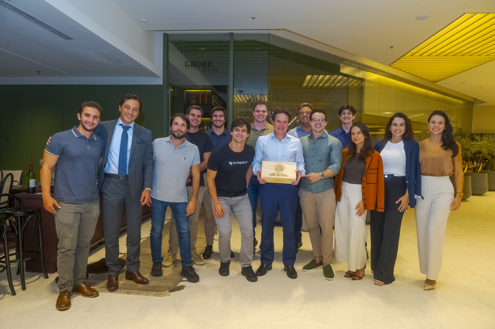
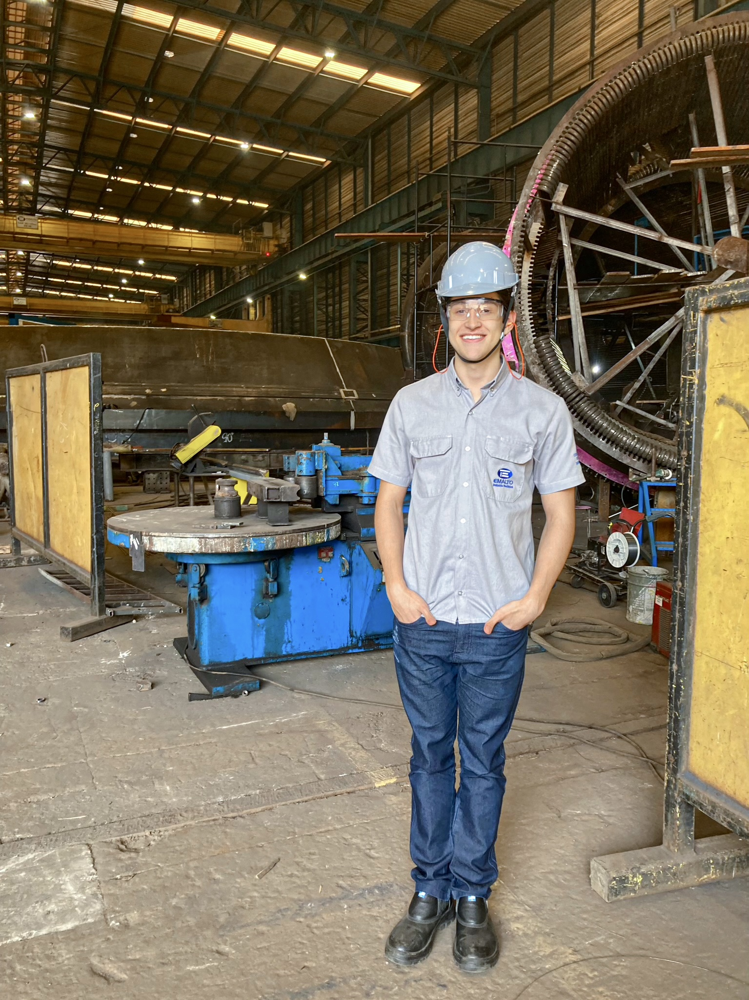

Objetivo
Busco integrar uma equipe de tecnologia e dados como estagiário no turno da tarde, atuando no desenvolvimento de soluções orientadas a dados. Pretendo aliar as competências adquiridas nos meus estudos e experiências na análise, tratamento e interpretação de dados, contribuindo para a geração de insights e melhoria de processos, com foco em aprendizado contínuo e adaptação a novos desafios.
Formação
Ibmec
Ciência de Dados e Inteligência Artificial
Previsão: dez/2028
Em andamento
Cultura Inglesa
Curso de Inglês — Nível Avançado
2016 – 2022
Experiência

Confraria Fora da Caixa
Estagiário em Gestão de Projetos
Jan/2026 – Em andamento
Organização de eventos e gestão de operações para confrarias empresariais
- Controle e organização de dados financeiros e operacionais da empresa
- Planejamento e acompanhamento de projetos e eventos com foco em eficiência
- Análise de informações para apoio à tomada de decisão e definição de estratégias
- Desenvolvimento de estratégias de marketing

EMALTO Indústria Mecânica
Estagiário em Engenharia de Processos
Jun/2025 – Jul/2025
Timóteo, MG
Estágio em tempo integral com circuito nos setores: Comercial, Engenharia, Montagem, Soldagem, Usinagem, Qualidade e Programação
- Realização de propostas técnicas e comerciais
- Planejamento de horas e processos de produção
- Desenho e detalhamento de peças e projetos
Softwares
Desenvolvimento
Pacote Office
CAD 2D & 3D
Competências
- Noções de programação em Python aplicadas à coleta de dados (web scraping)
- Conhecimentos básicos em desenvolvimento front-end (HTML e CSS)
- Organização e estruturação de informações para análise de dados
- Facilidade de aprendizado e adaptação a novas tecnologias
Extracurriculares
IbTech
Liga de Tecnologia
Jan/2026 – Em andamento
- Programação em C, HTML, CSS e JavaScript
- Participação em Hackathons e projetos
Sociedade de Debates Octógono
Liga de Debates
Set/2025 – Em andamento
- Desenvolvimento de oratória, argumentação e pensamento crítico
- Participação em debates competitivos
Inspira Sonhos
Trabalho Voluntário
Jun/2018 – Em andamento
- Organização e execução de ações sociais
- Apoio a crianças, adolescentes e idosos
Extra: Canal no YouTube
Tenho um canal de física mecânica estática no YouTube, link para acessar:
▶ Assistir no YouTube